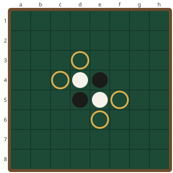
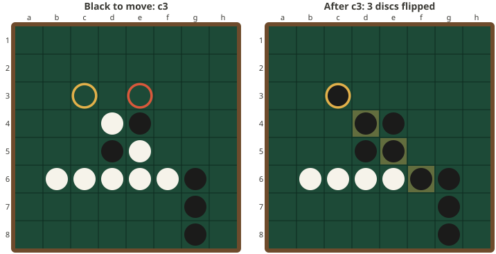
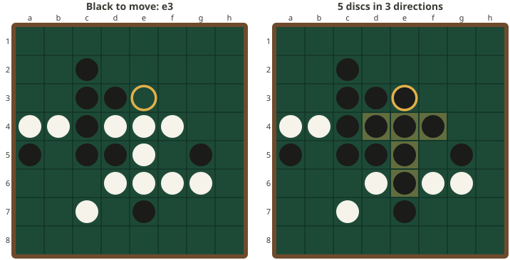
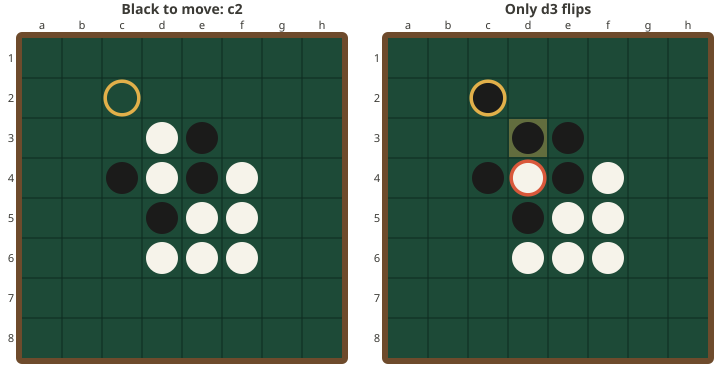
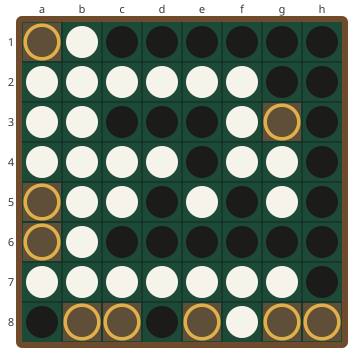
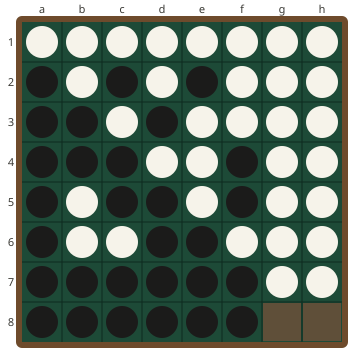
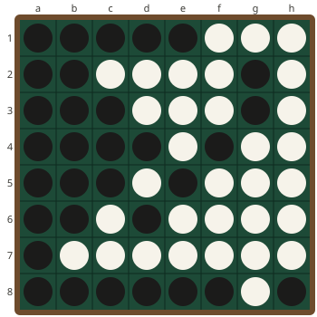

How to Play Reversi: Rules Explained With Diagrams
Learning how to play Reversi takes about five minutes: two players take turns placing discs on an 8×8 board, Black moves first, and every disc you place must trap at least one of your opponent's discs in a straight line so that they flip to your colour. If you have no move, you pass. When neither player can move, the player with more discs wins.
That is the whole game. The rest of this page goes through each rule in the order you meet it, with a board diagram for each, and spends extra time on the cases most rule sheets skip: one move flipping several lines, flips that don't set off more flips, passing, and a game that ends with empty squares still on the board.
The diagrams use the same names as our board: columns a to h from left to right, rows 1 to 8 from top to bottom. Every position comes from a real sequence of legal moves from the starting position, checked against the game engine this site runs. A gold ring marks a legal move, a red ring marks a square or disc to look at closely, and gold shading marks discs that just flipped.
How to play Reversi in six steps
- Start with two black and two white discs placed diagonally in the four centre squares.
- Black moves first; after that the players alternate.
- On your turn, place one disc so that it traps one or more of your opponent's discs in a straight line (across, down or diagonally) between the new disc and one of yours.
- Flip every trapped disc in every direction to your colour.
- If you can't trap anything anywhere, you pass and your opponent moves again.
- When neither player can move, count the discs. More discs wins; equal counts are a draw.
What is the goal of Reversi?
The goal of Reversi is to have more discs of your colour on the board than your opponent when the game ends. Discs change colour all game long, so nothing is safe until the last move; a player who is far behind in the middle of the game can still finish ahead.
A full board holds 64 discs, which means a score such as 35–29 is a win, 33–31 is a narrow win and 32–32 is a draw. Games don't always fill the board, though, as you will see further down.
How is the Reversi board set up?
A game of Reversi starts with four discs on the four centre squares: white on d4 and e5, black on d5 and e4, so that each colour sits on a diagonal. The other 60 squares are empty, and every game on this site starts from exactly this position.

In the original 19th-century game, players filled the four centre squares themselves, one disc per turn, so the opening layout could vary. The diagonal start shown here is the one used almost everywhere today, and it is the only one our board uses.
Who goes first in Reversi?
Black always goes first in Reversi, and from then on the players take turns. When you play against the computer here, you are Black, so you make the first move and the AI answers as White.
In the 2 players mode, the person playing Black starts and then hands the device to the person playing White. Because the four possible first moves are mirror images of each other, Black's first choice doesn't matter much; the game starts to take shape with White's reply.
What counts as a legal move in Reversi?
A legal move in Reversi is a disc placed on an empty square so that at least one straight line of your opponent's discs lies between it and another disc of yours, with no gaps. The line can run across, up and down, or diagonally. Being next to an opponent's disc is not enough: if the new disc doesn't trap anything, you can't play there.

Three details trip up new players. The trapped line must be all your opponent's discs, with no empty square in between. You can only place a disc, never move one that is already on the board. And you can't skip a turn on purpose: if you have at least one legal move, you must play one. On this site the board only lets you tap legal squares, and the faint dots show where they are until you turn them off under Options.
Can one move flip discs in several directions?
Yes. A single move flips every line it traps, in any of the eight directions, so one disc can capture across, down and diagonally in the same turn. You don't choose which lines to flip; every trapped line flips.

The one thing each line needs is its own black disc at the far end. A direction where the white discs run into an empty square or off the edge of the board flips nothing, even if other directions from the same move do flip.
Do flipped discs flip other discs in a chain?
No. Only the lines trapped by the disc you just placed flip; the discs that turn over do not trap anything new in that same move. A newly flipped disc can still help you on later turns, but it never sets off a chain reaction.

This is the rule most often misplayed in home games with a physical set. If you play by hand, flip the lines from the disc you placed and stop there.
What happens if you have no legal move?
If you have no legal move, you pass and your opponent moves again. Passing is only allowed when no square on the board would trap anything for you; as soon as you have a legal move again, you must play. A player can have to pass several turns in a row, and it usually happens late in the game.

On this board you never have to press a pass button. When the player to move has no legal move, a short message says so and the turn goes to the other side by itself. If you play against the AI, this is how you get several moves in a row when White is stuck.
Our Options menu also offers a stricter house rule: under When a player has no legal move, choose the game ends, and the game stops and is scored the moment either player has no legal move, instead of passing. The default is they must pass, which is the standard rule.
When does a game of Reversi end? Can it end with empty squares?
A game of Reversi ends when neither player has a legal move. That is usually because the board is full, but it can happen with empty squares left, when no disc placed on any of them would trap anything for either side. A game can also end early if one player loses all their discs, because then neither side can trap anything.

On this site, a position like this one shows Black's pass for a moment and then the final score. With the stricter option the game ends turned on, the game stops as soon as the player to move has no legal move, even if the other player could still move.
How is the winner decided, and what about a tie?
The winner is the player with more discs of their colour on the board when the game ends. If both players have the same number, the game is a draw. Only discs count: there are no points for corners, edges or the number of flips.

The score under our board updates after every move and shows the result when the game is over. Empty squares left at the end are not given to either player here. Some tournament rules add them to the winner's total; the winner is the same either way, only the margin changes.
How to play Reversi: the rules on one page
A printable summary for playing with a physical set. The button prints only this box, on a single page.
- Set-up: white on d4 and e5, black on d5 and e4. Black moves first.
- Move: place one disc so it traps at least one straight line of your opponent's discs (across, down or diagonal) against a disc of yours. No gaps.
- Flip: every trapped line, in every direction, flips to your colour. Flipped discs don't flip anything further.
- No move: pass, and your opponent plays again. You may not pass if you have a legal move.
- End: when neither player can move, even if squares are still empty.
- Score: more discs wins. Equal counts are a draw.
Play online: redreamality.com/reversi/
Once you know the rules
Knowing how to play Reversi and knowing how to win are two different things. The rules reward flipping, but good play often means flipping less, staying off the squares next to empty corners and keeping more moves than your opponent. Our Reversi strategy guide covers those ideas with the same kind of diagrams.
Play a game of Reversi now
The quickest way to learn how to play Reversi is to play a game. The board only lets you tap legal moves and shows each one with a dot, so you can't break a rule by accident. You play Black against the computer, or pick 2 players to play a friend on the same screen.